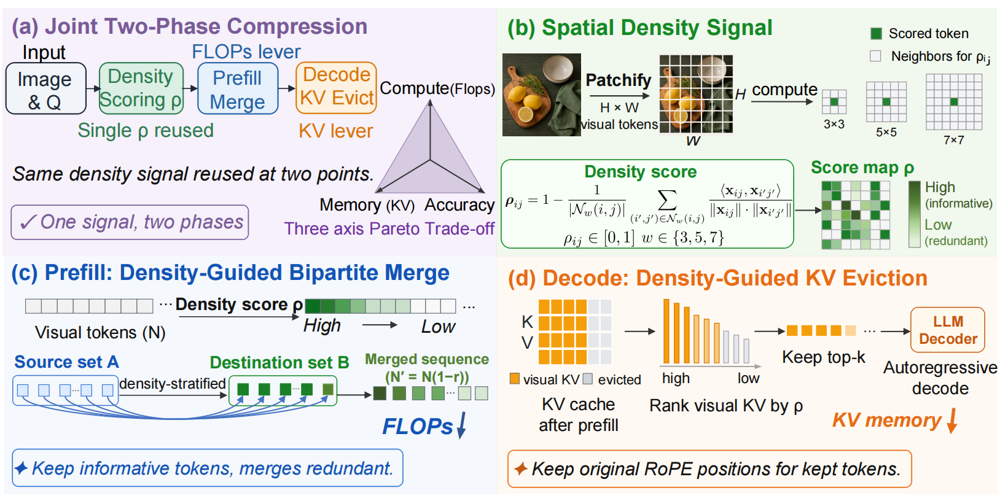
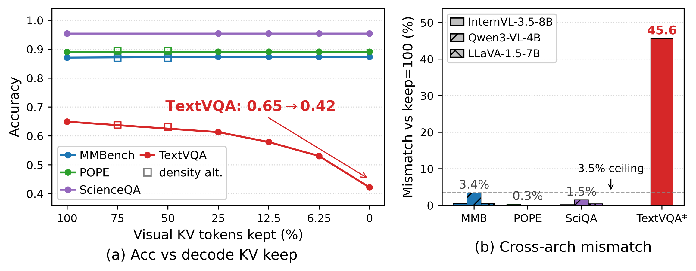
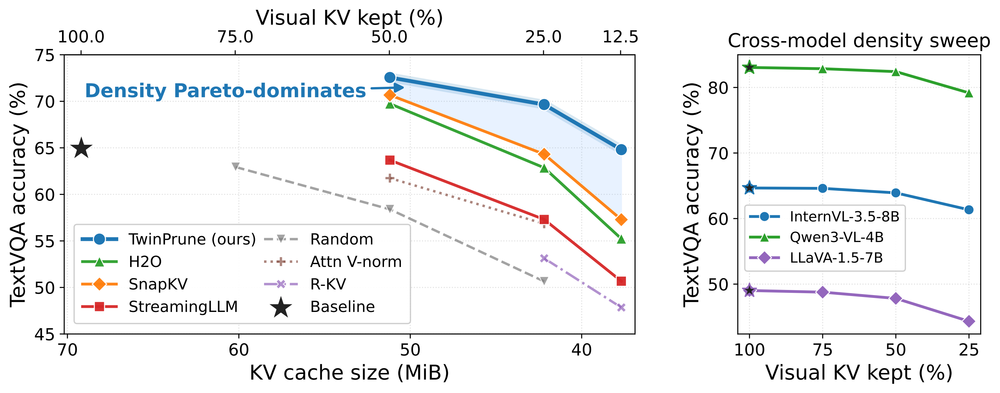

Abstract
TwinPrune is a density-aware two-phase token pruning framework for Vision-Language Models. It uses a unified spatial-density signal to score token importance in both inference phases: bipartite visual-token merging during prefill and visual KV cache eviction during decode. The paper shows that first-token prefill probes can hide decode-stage failures, while full-pipeline benchmarks such as TextVQA, DocVQA, and MM-Vet expose the real cost of KV pruning. TwinPrune therefore optimizes an honest three-axis Pareto frontier over accuracy, prefill speedup, and decode memory.
Method

Prefill: Density-Guided Bipartite Merge
TwinPrune ranks visual tokens by spatial density and merges redundant low-density tokens through bipartite matching. This reduces prefill FLOPs while preserving high-density visual evidence.
Decode: Density-Guided KV Eviction
The same density ranking is reused to keep informative visual KV entries and evict redundant ones during autoregressive decoding, reducing visual KV memory without changing retained RoPE positions.
The central design choice is one signal, two phases: a single spatial-density score controls both the FLOPs lever in prefill and the KV-memory lever in decode. This avoids treating prompt compression and cache compression as unrelated problems.
Why Decode Evaluation Matters

| Phase | Signal / Keep | MMBench | POPE | SQA | TextVQA |
|---|---|---|---|---|---|
| Prefill | Density / 75,50,25% | 0 | 0-0.03 | - | 3.1 / 7.0 / 14.9 |
| Prefill | Random / 25% | 0 | 0 | - | 32.8 |
| Prefill | Attention / 25% | 0 | 0.03 | - | 25.1 |
| Decode | Density / 25,12.5,6.25% | 0.54 | 0.32-0.35 | 0.20 | 15.9 / 23.0 / 31.1 |
| Decode | Density / 0% (drop all) | 0.54 | 0.38 | 0.20 | 45.5 |
MMBench, POPE, and ScienceQA mostly score the first decoded token, so they are insensitive to decode-stage visual KV removal. TextVQA exposes the failure: dropping visual KV entries can sharply hurt full-sequence generation even when prefill probes look stable.
Prefill Compression Results
| Setting / Method | TPL% | MMBench | POPE | SQA | TextVQA | Avg-4 | Speedup |
|---|---|---|---|---|---|---|---|
| Baseline | 100.0 | 0.8707 | 0.8903 | 0.9539 | 0.6493 | 0.8411 | 1.00x |
| CAC, low-TPL | 65.2 | 0.8909 | 0.9142 | 0.9792 | 0.7195 | 0.8759 | 1.16x |
| CAC, extreme stress | 24.1 | 0.8282 | 0.8670 | 0.8929 | 0.5696 | 0.7894 | 2.67x |
| CAC, visual-only prune | 20.0 | 0.8467 | 0.8835 | 0.8914 | 0.5793 | 0.8003 | 3.24x |
| CAC + LoRA | 30.0 | 0.8514 | 0.9058 | 0.9321 | 0.6385 | 0.8319 | 2.14x |
In the prefill phase, density-guided merging preserves accuracy under both moderate and aggressive token budgets, while structurally invalid pruning strategies can collapse under extreme stress.
Decode KV Results

| Method | TextVQA | MM-Vet | DocVQA | ||||||
|---|---|---|---|---|---|---|---|---|---|
| 50% | 25% | 12.5% | 50% | 25% | 12.5% | 50% | 25% | 12.5% | |
| Baseline | 0.733 | 0.756 | 0.642 | ||||||
| StreamingLLM | 0.637 | 0.573 | 0.507 | 0.667 | 0.561 | 0.514 | 0.468 | 0.384 | 0.324 |
| H2O | 0.697 | 0.629 | 0.552 | 0.662 | 0.571 | 0.497 | 0.555 | 0.438 | 0.347 |
| SnapKV | 0.707 | 0.643 | 0.573 | 0.654 | 0.585 | 0.513 | 0.577 | 0.469 | 0.377 |
| Density (ours) | 0.726 | 0.697 | 0.648 | 0.708 | 0.634 | 0.551 | 0.575 | 0.466 | 0.382 |
During decode, density-guided KV eviction dominates prior cache pruning methods on TextVQA and MM-Vet and remains competitive on DocVQA. The Pareto plot shows that TwinPrune keeps higher accuracy at smaller visual KV cache sizes.
BibTeX
@article{liu2026twinprune,
title = {TwinPrune: Density-Aware Two-Phase Token Pruning for Vision-Language Models},
author = {Liu, Kai and Li, Anqi and Li, Junxian and Wang, Zhixin and Chen, Zhikai and Pei, Renjing and Zhang, Yulun},
journal = {arXiv},
year = {2026}
}